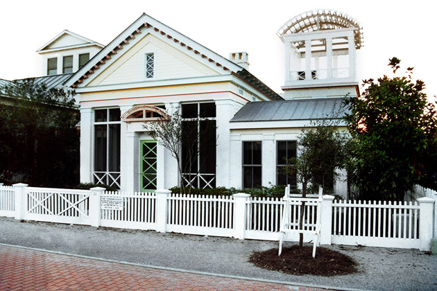

The Truman Show
Main Content

How can you not love a film with a main character called Meryl Burbank? Peter Weir’s surprise sleeper predicts the global phenomenon of reality TV, with Jim Carrey as Truman Burbank, the – unwitting star of a 24-hour soap since his birth, and Ed Harris as Christof, the Godlike TV director running the show.
The film demanded a slightly stagey location to represent Truman’s purpose-built world within a studio. The fictitious town of ‘Seahaven’ is in actuality a planned resort, called, generically, Seaside. No, it’s not built under a giant dome in the Hollywood Hills. This pastel newtown fantasy of a traditional resort can be found on the Gulf coast of Florida, on I-98 about 30 miles east of Panama City toward Fort Walton Beach.
‘Seahaven's’ business district needed a little CGI help as Seaside doesn't have so much of a downtown, but the rest of the town is pretty much as seen. Truman's house, now proudly labelled The Truman House, is 31 Natchez Street, Seaside, to the west of town near Natchez Park.
Visit Info
Visit The Film Locations
Florida
Visit: Florida
Visit: Seaside